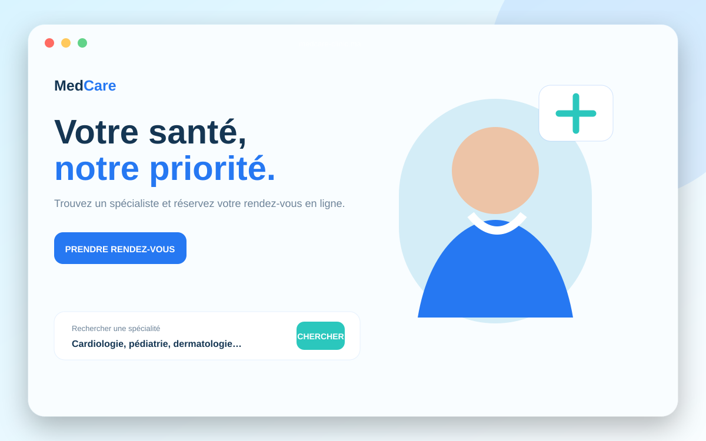
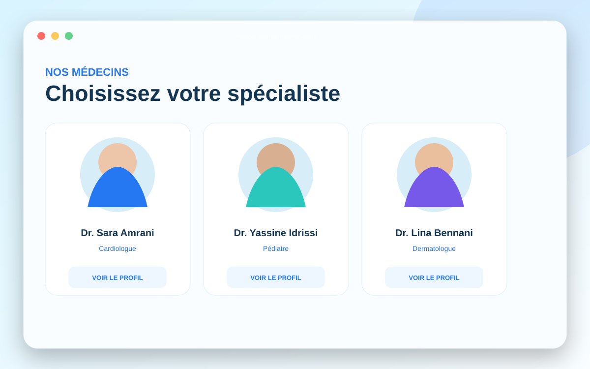
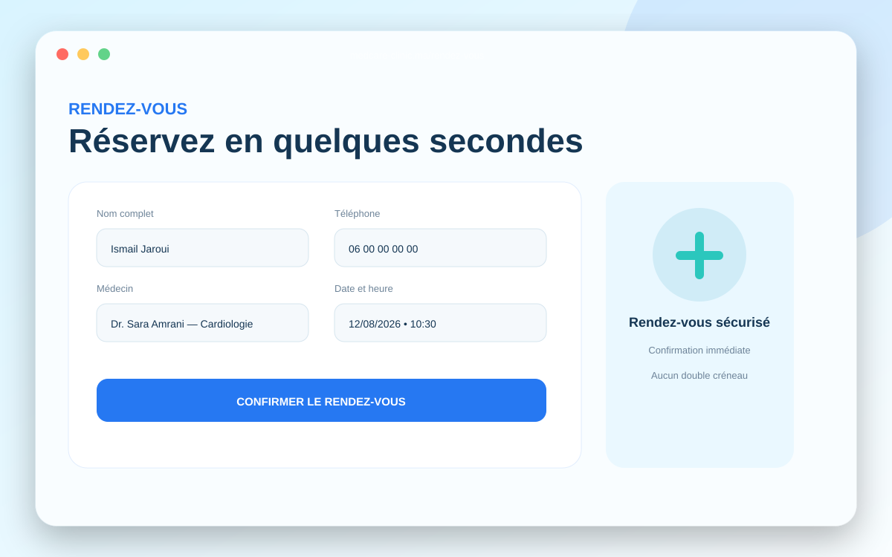
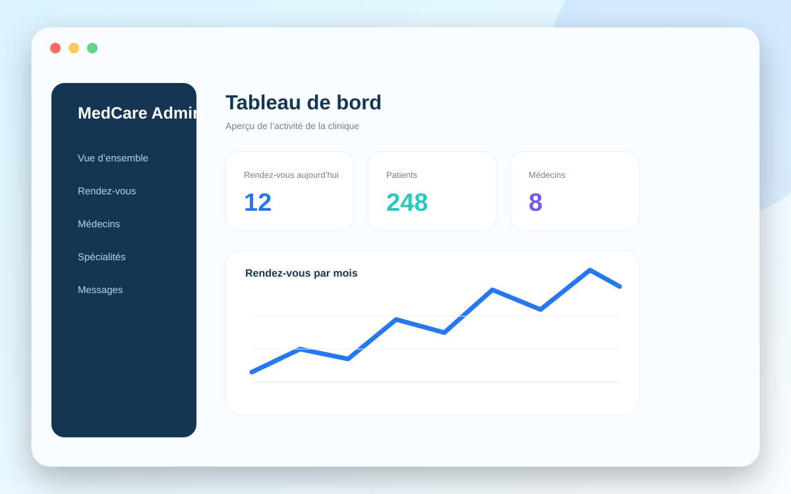

Choix du médecin, de la date et de l’heure avec validation.
Plateforme médicale Django
MedCare Clinic
Une application Django qui permet aux patients de découvrir les médecins et de réserver un rendez-vous en ligne.

Le projet
TypeApplication métier
StackDjango • Python • SQLite
Durée cible10 à 14 jours
RôleDesign & développement complet
Objectif
Faciliter la prise de rendez-vous, présenter les spécialistes et donner à la clinique un espace d’administration pour gérer son activité quotidienne.
Les écrans ci-dessous montrent plusieurs parties du projet, et pas uniquement sa page d’accueil.
Présentation complète
Les écrans du projet
Accueil, fonctionnalités principales et espace de gestion.



Fonctionnalités réellement intégrées
Ajout, modification et suppression des profils médicaux.
Statistiques, rendez-vous, messages et données clés.
Confirmation, report, refus ou annulation des rendez-vous.
Recherche rapide d’un médecin ou d’une spécialité.
Données persistantes avec Django et SQLite.
Vous souhaitez un projet similaire ?
Expliquez votre activité et recevez une proposition adaptée à votre budget.
Parler du projet